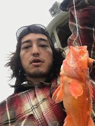
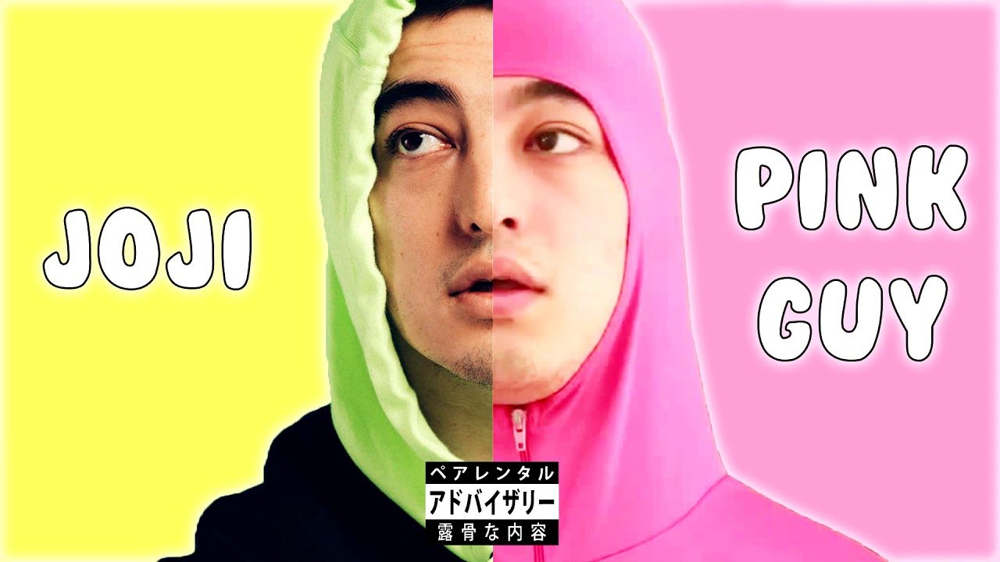

Mission Statement
The Joji Solaris tour is coming to my home state on July 23rd, and in celebration for his comeback and tour after a 3 year hiatus, I wanted to create a website dedicated to Joji and his music. This website will feature information about his albums that are premiering on the tour, tour dates, and tour locations, as well as links to his official social media accounts and tickets for the tour. I hope this website can serve as a hub for Joji fans to stay updated on his music and tour, and to connect with other fans in the community.

My Joji Backstory
I have been a really big fan of Joji for several years, as far back as his Filthy Frank era. His unique blend of music, humor, and creativity has always resonated with me, and I have been following his career closely since he transitioned to making music full-time. Although I have yet to see him live, I have been eagerly anticipating his return to music and the oppportunity to see him perform in person. I am excited to create this website as a way to share my love for Joji's music and to connect with other fans who share the same passion. Though I doubt this website could reach Joji, I hope it can serve as a platform for fans to celebrate his music and to keep up with his latest updates and tour information.
